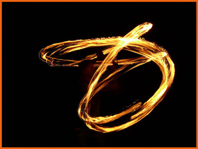

 The ancient Greeks considered fire one of the major elements in the universe alongside water, earth, and air. Earth, water and air are all forms of matter, but fire is special; it is the visible, tangible side effect of matter changing form.
more...Eadem Mutata Resurgo: ``I shall arise the same though changed''.
That is the inscription on the tombstone of Jakob Bernouilli, a Swiss Mathematician (1654 - 1705), who wrote a treatise about spirals called Spira mirabilis (Wonderful Spirals).
more...